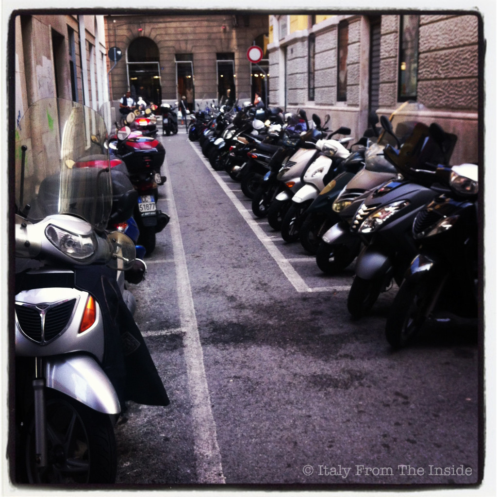

Il motorino. This is how the scooter is mainly known in Italy. The number of motorini in Italy is so great that some cities, like Trieste, have decided to turn entire streets into scooter parkings. And yet, sometimes not even that is enough: note the first two scooters on the right and how they are parked outside the marked spaces. Or the one at the end of the walking corridor. That guy clearly preferred to park in "pole position".